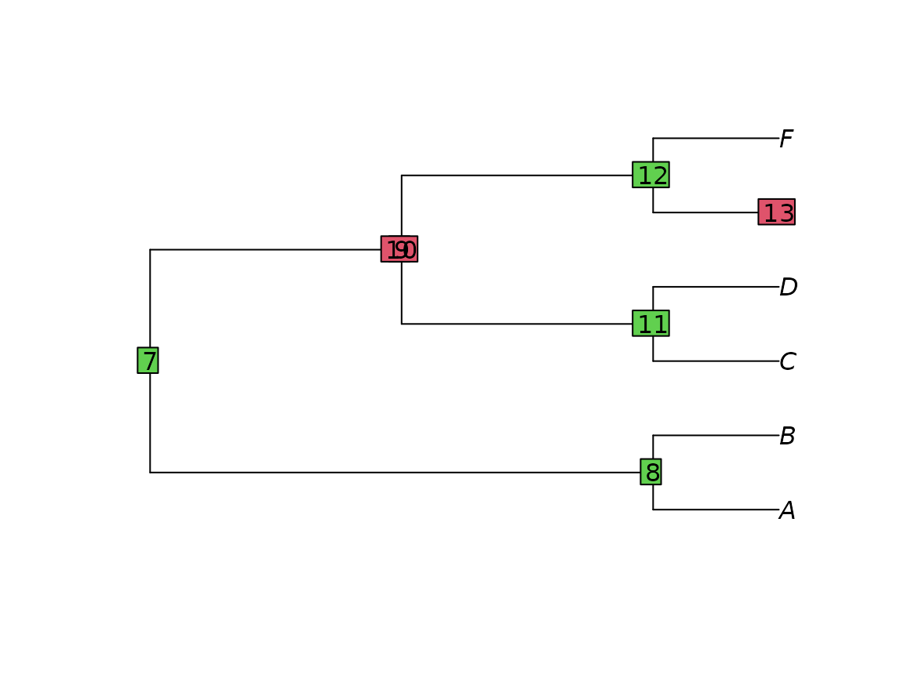

Loading phylogenetic trees into R
Martin R. Smith martin.smith@durham.ac.uk
2021-03-12
Source:vignettes/load-trees.Rmd
load-trees.RmdIf a tree is available in a text-based format, it should not be too difficult to load into R.
Manual entry
A straightforward, if cumbersome, way to enter trees into R is by manual text entry:

Beware common gotchas when entering text:
Ensure that the tree string ends in a semi-colon.
Make sure that brackets are matched. Some text editors, such as RStudio or Notepad++, contain built-in syntax highlighting that will highlight the counterpart to each parenthesis as you type.
Look out for ((double brackets)) or brackets enclosing a single node: the resultant ‘invisible nodes’ can cause R to crash.
badTree <- ape::read.tree(text='((A, B), (((C, D), ((E), F))));')
plot(badTree)
ape::nodelabels(bg = c(3, 3, 2, 2, 3, 3, 2))
The text is expected in Newick format, so can contain edge lengths - but edge lengths must be included for every edge of the tree, or they will be ignored.

From a file
First off, make sure that you are comfortable telling R where to find a file.
Nexus files
You can load trees from a nexus file using:
filename <- "my_file_name.nex"
ape::read.nexus(filename)If the file contains multiple trees, this will return a list of all trees in the file, with the class multiPhylo. If there is a single tree, then this will be returned as a tree of class phylo unless the option force.multiPhylo = TRUE. This can be useful when an unknown number of trees are to be processed in bulk, for example by
lapply(ape::read.nexus(filename, force.multiPhylo = TRUE), ape::consensus)Newick files
Newick trees can be read with ape::read.tree(filename); phytools::read.newick(filename) does not report an error when a ‘node’ has a single descendant (which will often denote a misspecified tree).
Trees from TNT
Trees saved using TNT can be opened in R using ReadTntTree().
Trees should be saved in parenthetical format (TNT command tsav*), rather than TNT’s compressed format (TNT command tsav).
The TNT command taxname= will write taxon names to file, which results in larger but easier to read files. Trees in such a file will be read using the terminal names saved within the file. The TNT command taxname- saves just the numbers of the terminals. In order for the trees to be reunited with the names of their tips, terminal labels will be read from the linked matrix file listed in the first line of the .tre file. Ensure that this file exists in the expected location. If it does not, use ReadTntTree(treeFile, relativePath = '../path/to/tipNameFile'), or tipLabels to manually specify the names of the tips (e.g. ReadTntTree(treeFile, tipLabels = c('outgroup', letters[1:8])).
Other formats
Are there other formats that should be listed here? Please let me know by opening an issue.
Export (write) trees
To save a tree to a text file, use ape::write.tree(tree, file='filename.txt') for Newick format (widely supported by most phylogenetic software), or ape::write.nexus(tree, file='filename.nex') for Nexus format.
What next?
You might want to:
Load phylogenetic data into R.
Conduct parsimony search using Brazeau, Guillerme & Smith’s approach to inapplicable data, or using Profile parsimony.
Calculate distances between pairs of trees.